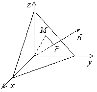

5.2.4. Нормальное
уравнение плоскости
Пусть  – основание перпендикуляра,
опущенного из начала координат на плоскость, а
– основание перпендикуляра,
опущенного из начала координат на плоскость, а  –
произвольная точка плоскости (), длина вектора , –
единичный вектор нормали к плоскости, , .
–
произвольная точка плоскости (), длина вектора , –
единичный вектор нормали к плоскости, , .
– основание перпендикуляра,
опущенного из начала координат на плоскость, а –
произвольная точка плоскости (), длина вектора , –
единичный вектор нормали к плоскости, , .
Проекция радиус-вектора любой точки плоскости на направление,
задаваемое вектором – величина постоянная, равная
 :
:  ,
,
: , .
Уравнение задает
нормальное уравнение плоскости в виде
Нормальное
уравнение плоскости
,
где – направляющие
косинусы нормали к плоскости, а p – расстояние от плоскости до начала
координат (длина нормали, опущенной на плоскость из начала координат).
Приведение уравнения плоскости к нормальному виду (нормализация)
Приведем общее уравнение плоскости  к
нормальному виду:
к
нормальному виду:
к
нормальному виду:.
Так как эти уравнения определяют одну и ту же плоскость,
то их коэффициенты пропорциональны:
.
Из условия , которому
удовлетворяют направляющие косинусы вектора, следует, что
.
Введем так называемый нормирующий множитель
Формула
вычисления нормирующего сомножителя
знак
которого определяется из условия , т.е. должен быть
противоположен знаку свободного члена нормируемого уравнения.
Умножением на нормирующий множитель общее уравнение плоскости приводится
к нормальному виду:
1˚. Приведение уравнения плоскости к нормальному виду
позволяет узнать ее расположение относительно системы координат.
2˚. Введение нормирующего множителя соответствует замене
произвольного вектора нормали в уравнении
плоскости единичным вектором нормали
Единичный
вектор нормали
.